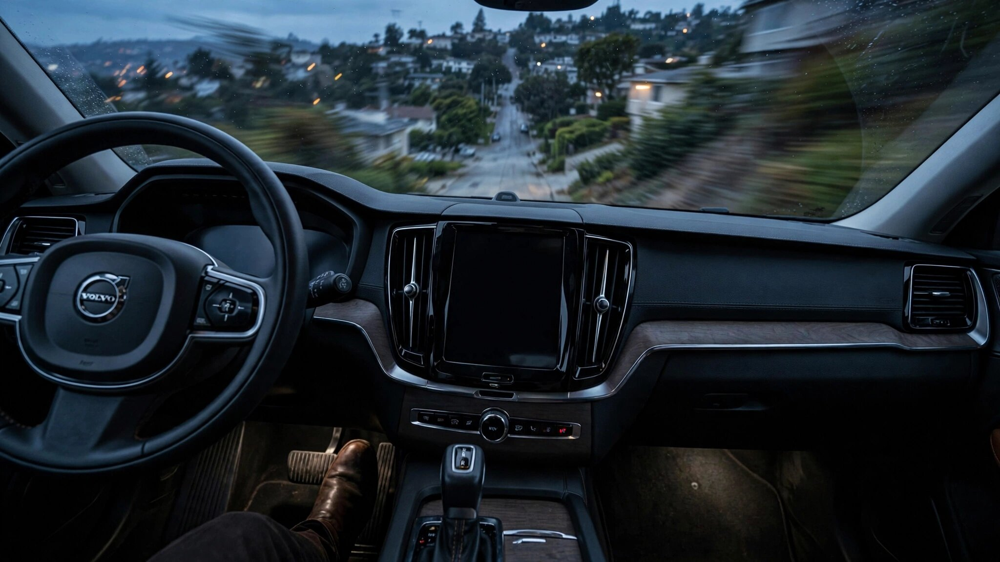

Volvo Fixed the Camera. The Fix Killed the Brakes.

Volvo recalled 413,151 vehicles in May 2025 because their rearview cameras stopped displaying an image when you shifted into reverse. That violated Federal Motor Vehicle Safety Standard 111. Volvo's fix was an over-the-air software update, simple enough, and then 11,469 of those vehicles stopped being able to brake. Camera fixed. Brakes broken.
NHTSA recall 25V-392, filed June 12, 2025, covers what happened next: Volvo's OTA camera remedy introduced a condition nobody tested for, where a vehicle in regenerative braking mode that coasts downhill for at least one minute and forty seconds without the driver touching any pedal can lose its braking system completely.[1] Not partially, not with a warning light and reduced performance, but completely. Press the brake pedal after the failure sequence and nothing may happen.
One incident was captured on video, and NHTSA linked it directly in their press release, which is unusual enough to notice. An urgent public warning followed: do not drive, turn off regenerative braking, download the fix immediately.[2] As of July 15, 2026, roughly 1,000 of the 11,469 affected vehicles still had not downloaded the update. A thousand drivers, on roads with hills, in cars whose brakes might not work.
Nine model lines are affected, spanning Volvo's entire electrified range: C40, EC40, EX40, S60, S90, V60, XC40, XC60, and XC90, model years 2020 through 2026.[1] Not cheap cars, either: an XC90 PHEV starts above $70,000. Buyers paid that premium partly because the badge represents seven decades of safety leadership, a company that invented the three-point seatbelt and gave the patent away so the entire industry could use it, a brand whose whole identity is built on the promise that their engineering will not kill you. Now that legacy includes shipping a software update that can leave you rolling downhill with no way to stop.
Follow the chain of causation. Recall 25V-282 covered a software bug in Volvo's Android-based infotainment system: a fault code could disable the backup camera for an entire driving cycle.[3] Over 400,000 vehicles across nearly the entire 2021-2025 lineup, and Volvo pushed an OTA update to patch the camera fault, except that patch interacted with the brake control module in a way nobody anticipated, creating a failure mode far more dangerous than the defect it was correcting.
A backup camera that does not display is inconvenient and technically illegal under FMVSS 111, but the vehicle still has mirrors, park assist sensors, rear cross-traffic alert, and rear automatic braking. Volvo said so themselves in their 25V-282 filing. A braking system that fails entirely while descending a grade has no backup, and calling that an inconvenience would be generous. It is the textbook definition of an unreasonable safety risk, the kind of language NHTSA reserves for defects that can actually kill people, which is presumably why the agency used it.
Scope reduction tells the story: of 413,151 vehicles in the original camera recall, only 11,469 are in the brake failure recall. Only vehicles that actually received the OTA camera fix are affected. Procrastination, in this case, was protective. If you owned one of those 400,000 Volvos and happened to be slow about installing the camera update, your laziness may have saved your braking system.
Volvo is not alone in the camera problem. Audi recalled approximately 356,000 vehicles and Porsche recalled 173,000 for similar rearview camera failures in the same timeframe.[4] Combined with Volvo's 413,151, that is nearly a million vehicles across three premium brands whose federally mandated backup cameras stopped working. But only Volvo managed to fix the camera and break the brakes in the same operation. A class-action lawsuit has been filed in the Western District of New York over the original camera defect, alleging Volvo had prior knowledge and continued selling affected vehicles.[5]
Here is the structural risk nobody is talking about. OTA updates are supposed to make recalls faster, cheaper, and more convenient, and they do: no dealer visit, no mailed letters, no six-month wait for parts. But that same speed and reach means a bad fix propagates across an entire fleet before anyone discovers what it broke. A physical recall at a dealer involves a technician who can verify the repair works before the vehicle leaves. An OTA update deploys to thousands of vehicles simultaneously, turning the entire installed base into an unwitting beta test, and the first indication something went wrong may be a car descending a grade with a driver standing on a pedal that does nothing. Software ate the car. Now it is eating the recall system too.
If you own any Volvo PHEV or BEV from model years 2020-2026: Check your VIN at nhtsa.gov/recalls for both recall numbers: 25V-282 (camera) and 25V-392 (brakes). If the brake recall applies to your vehicle and the update has not been installed, turn off "B" mode in PHEVs or one-pedal driving in BEVs immediately. Do not coast downhill in regenerative braking mode until the software is updated. Call Volvo Customer Care at 800-458-1552 or your local dealer.
Limitations
NHTSA has not published a total incident count beyond the one video-documented case, and roughly 1,000 vehicles remained unpatched as of July 15, 2026, though that number may have decreased since. Whether other OTA recalls have produced similar cross-system failures remains unknown, and Volvo's FARS fatality data in our database covers the overall fleet and predates these electrified models.
Strongest Counterargument
Speed matters, and the OTA model delivered it: Volvo identified the brake defect, pushed a second fix, and NHTSA's urgent warning reached owners within weeks rather than the months a traditional mailed-letter recall would have taken. Only 2.8% of the original 413,151 camera recall population was affected, and over 90% had the brake fix installed within a month, so the system caught and corrected its own error faster than any pre-OTA process could have managed. It is also worth nothing to the driver who, in the weeks between the bad update and the good one, crested a hill in one-pedal mode and discovered that pressing the brake did exactly nothing.
Sources & References
- NHTSA, Recall 25V-392 (June 12, 2025): Volvo PHEV/BEV brake failure from OTA camera fix, 11,469 vehicles. nhtsa.gov
- NHTSA, "Volvo Recall: Urgent Brake Failure Warning," press release with video. nhtsa.gov
- NHTSA, Recall 25V-282 (May 8, 2025): Volvo rearview camera failure, FMVSS 111 violation, 413,151 vehicles. nhtsa.gov
- Autoblog, "Volvo's Fixing the Same Cars It Recalled Last Year for the Same Issue." Audi ~356,000 and Porsche ~173,000 vehicles with similar camera defects. autoblog.com
- Autoblog, "Volvo Sued Over Rearview Camera Defect Affecting Over 400,000 Cars." Class action, U.S. District Court, Western District of New York. autoblog.com
Data sourced from NHTSA recall filings and press releases. The Crash Report is not affiliated with any automaker. Check nhtsa.gov/recalls for the latest recall status on your vehicle.